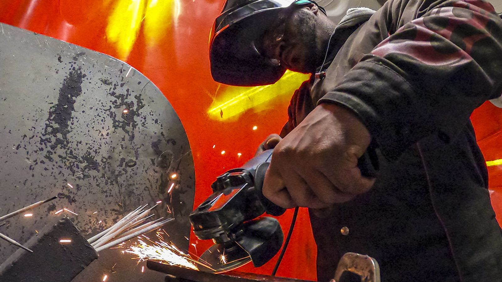
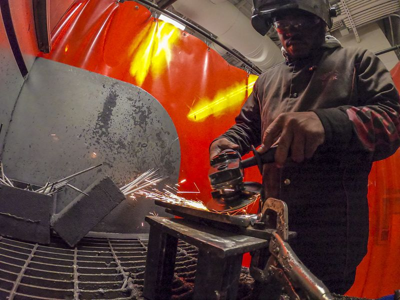
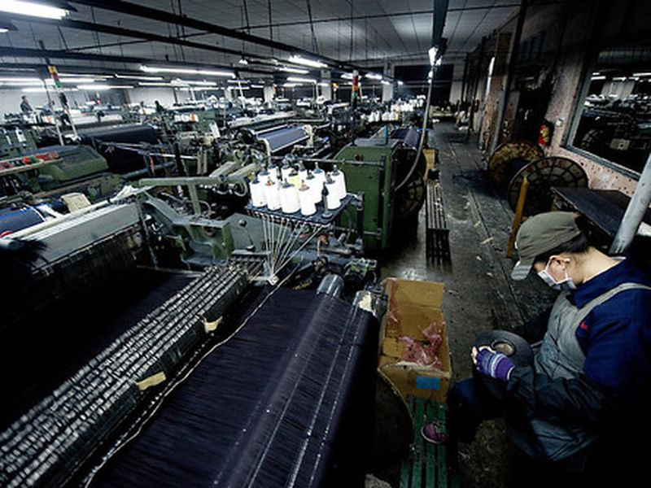

사업분야
소량 시작품부터 양산까지 대응합니다.

5축 가공. 공차 ±0.005mm 까지 대응합니다.

설계부터 시험사출까지 사내에서 처리합니다.
전수 검사 후 성적서와 함께 납품합니다.
보유 설비
도면을 보내주시면 어느 장비로 가능한지 회신드립니다.
연혁
주요 사항만 추렸습니다.
화성 향남에서 선반 2대로 시작했습니다.
자체 공장을 짓고 CNC 라인을 갖췄습니다. 자동차 부품 1차 협력사 등록.
품질경영시스템을 도입하고 전수 검사 체계를 만들었습니다.
±0.005mm 정밀 가공이 필요한 물량을 맡기 시작했습니다.
한 번 물려서 다섯 면을 가공합니다. 공정이 줄어 납기가 빨라졌습니다.
불량률 0.02% 를 유지하고 있습니다.
인증 · 등록
도면 검토는 무료입니다. 2D·3D 어느 쪽이든 보내주시면 가공 가능 여부, 예상 단가, 납기를 3일 안에 회신드립니다. 보내주신 도면은 검토 후 폐기하며 외부에 공유하지 않습니다.
일하는 순서
진행 상황은 담당자가 주 1회 알려드립니다.
가공 가능한지, 더 싸게 만들 방법이 있는지 먼저 봅니다.
3일자재비와 가공비를 나눠 적은 견적서를 드립니다.
2일1~2개를 먼저 만들어 치수를 맞춰 보고 승인받습니다.
1~2주전수 검사 후 성적서와 함께 보냅니다.
수량에 따라문의
검토 후 가능 여부와 일정을 회신드립니다.